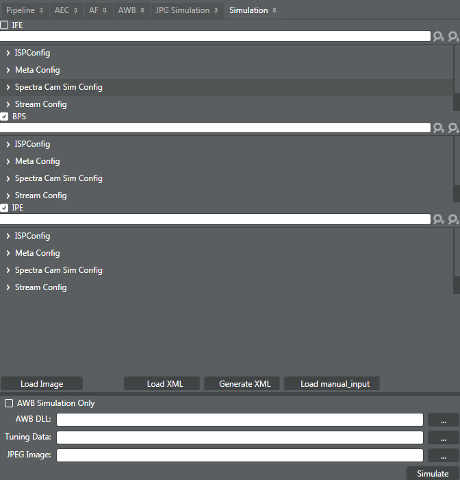

Use this procedure to run an AWB simulation or a pipeline simulation, or
both. The pipeline simulation generated by this tool requires the use of a raw image.
To run AWB simulation, get these two DLL files from the
target and place them in a local folder together:
- com.qti.stats.awb.dll
- com.qti.stats.awbsimulationwrapper.dll
When prompted for the DLL file, give the path to
com.qti.stats.awb.dll. The simulator finds the other DLL file
in the same folder.
-
Open the correct tuned project in the Chromatix tool.
-
Click the Simulation tab
to open the simulation window.

AWB Simulation preceding pipeline
simulation
-
Click
 next to AWB DLL, navigate to com.qti.stats.awb.dll, and click Open.
next to AWB DLL, navigate to com.qti.stats.awb.dll, and click Open.
-
Click next to Tuning
Data, navigate to the tuned data file from the target device,
and click Open. NOTE: For
subsequent simulations, it is important to update the .bin file after making any
tuning parameter updates. to navigate to the tuned .bin file from the target
device. Select the target data file and click
-
Click
next to JPEG Image to navigate to the
.jpg file that has the 3A debug information. Select the image file and click
Open.
-
Run the simulator to produce a simulated image based on the AWB
info associated with the JPEG file. Click Simulate and wait until Simulation
finished shows in the simulation window.
The resulting output gains and CCT are used for the
pipeline simulation.
Pipeline Simulation using raw image
input
-
(Optional) To reuse existing XML files in the project
simulation subfolder, click Load XMLs,
navigate to the existing XML files, and click Open. If
this step is not performed, the simulation overwrites the XML files in the
project simulation subfolder.
-
Select the check box(es) for the tuning modes for which the simulation will
run.
-
Enter or adjust configuration values as needed.
-
Use ISPConfig to adjust pipeline-related
values.
-
Use Meta Config to adjust values such as CCT and
gains.
-
Use Spectra Cam Sim Config to adjust simulation
configuration settings.
-
Use Stream Config to adjust sensor-related
values.
-
Click Load Image,
navigate to the raw image to use for the simulation, and click Open.
-
(Optional) To provide manual simulation inputs, click
Load manual_input. For example,
manual input may contain actual hardware values of LSC/GTM or Gamma input.
-
(Optional) If no simulation subfolder exists in the
appropriate project folder, click Generate
XML to create the subfolder. This is generally necessary only
the first time a simulation is run for a specific project.
-
Run the simulator to produce a simulated image based on your
tuned pipeline settings. Click Simulate
and wait until Simulation finished shows
in the simulation window.
The simulated image appears in the image pane for
evaluating the result.